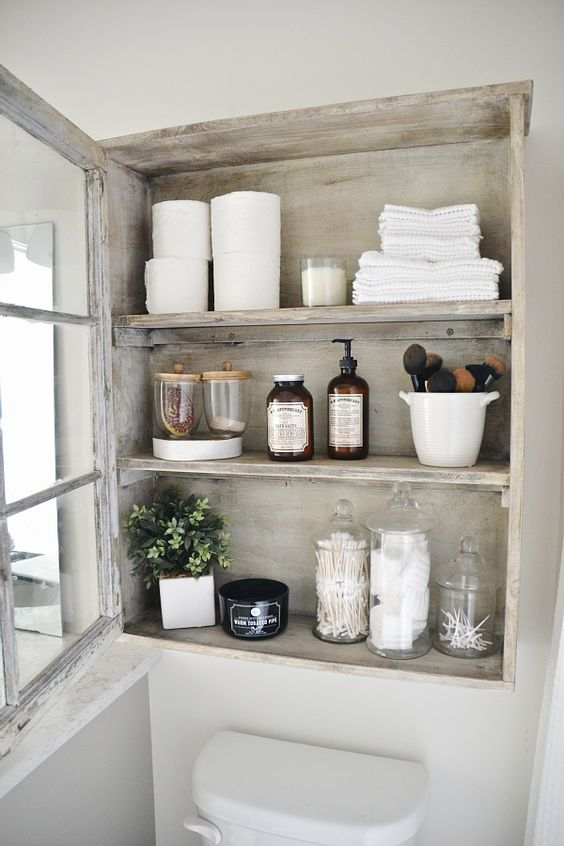

Sans for organisering
Af: Amalie Juulsgaard
Det kan være svært at organisere sig på få kvadratmeter. For at skabe ro og harmoni i et lille hjem er det vigtigt, at have orden i sine ting.
Her er en nem og billig guide til hvordan du kan holde orden i forskellige ting, som kan være med til at skabe en ro og give en sans for organisering i dit lille studiehjem.

Organisering i køkkenet:
Køkkenet er et sted vi bruger meget tid. Mange af vores hårdtjente penge eller SU går til, er mad. Derfor er det en god idé, at have visse ting på lager så du altid kan lave billigt, men lækkert mad. Her er en idé til hvordan du kan få lækre ingredienser på lager og holde orden i dem.
Dette skal du bruge:
- Glas med låg:
o 3 stk. 29 kr.
13 cl.
Højde: 7 cm.
Diameter: 7 cm.

o 1 stk. 12 kr.
0,5 l.
Højde: 10,5 cm.
Diameter: 11 cm.

o 1 stk. 15 kr.
1 l.
Højde: 16,5 cm.
Diameter: 12 cm.

o 1 stk. 19 kr.
1,8 l.
Højde: 21,5 cm.
Diameter: 12,5 cm.

- Find nu de ingredienser frem du gerne vil have i dine glas og put dem i.
- Til sidst skriver du navn udenpå med en Permanent tusch, vælg gerne en sjov farve du synes passer til din smag (sort, hvid, guld, sølv). – kan købes i Søstrene Grene for 20 kr.
- De er nu klar til at stille fremme på en hylde eller et andet sted i dit køkken. Du kan også opbevare dem i en skuffe.